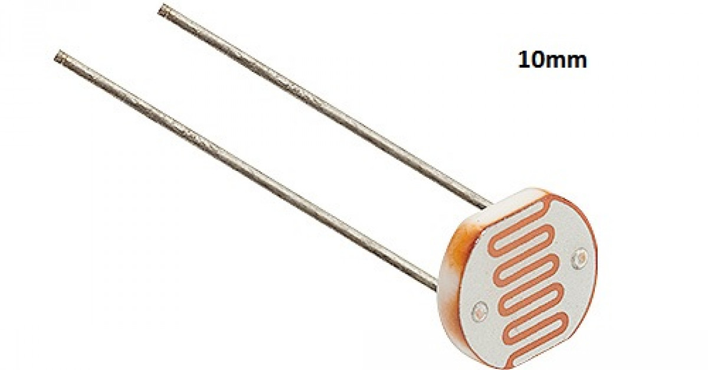

O que é o LDR?
O LDR (Resistor Dependente de Luz) é um componente eletrônico que varia sua resistência de acordo com a intensidade da luz que incide sobre ele. Em ambientes iluminados, sua resistência diminui, permitindo maior fluxo de corrente elétrica.
Como o LDR pode ser usado como sensor de luz?
O LDR pode ser utilizado em projetos de automação e controle de iluminação, acionando dispositivos como LEDs e relés com base na luz detectada.
Foto do LDR real
Principais aplicações e usos do LDR no controle de iluminação
- Automação de iluminação externa
- Sistemas de segurança
- Projetos de jardinagem